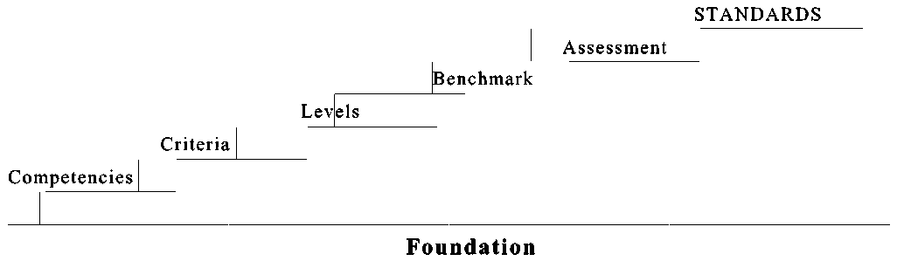

Notes:
Definition
Not by averaging marks on components or averaging over time
Role of judgment
Reporting
Gonzc1: agreement that awards should be Based on outcomes rather than inputs,; Certificates and diplomas should be awarded based on demonstratible skills rather than hours of instruction received; Assessment on a combination of techniques; Traditional methods data is collected on knowledge possessed by the learner from which an inference is made about the individuals capacity to do certain things in the future; In performance assessment, data is collected on the application of knowledge, the use of skills and on attitudes in real or simulated settings; inference is still used ie on the capacity to do certain things in the future but to a lesser degree
The demonstration of certain skills is usually associated with the application f knowledge and/or its synthesis. This is a higher form of knowledge than is usually tested in traditional exams. Performance based assessment usually puts people in a position where they have to comprehend, apply analyze, synthesize, and evaluate data and information” Performance has the potential for assessing knowledge better than traditional assessment.
Where the goal is to assess performance, it appears that informed professional judgment is essential to the process and the reliability and validity will not suffer as a result.
Major advantages of performance assessment: more valid, provide better indication to unsuccessful candidates where they have weaknesses, may assess knowledge better, may be more cost effective
Assessment of actual tasks
Maybe a level for young students called foundational level which does not use a community based benchmark
Ontario report card: The standards are: aligned with college and work expectations; clear, understandable and consistent,; include rigorous content and application of knowledge through high order skills; build upon strengths and lessons of current state standards; informed by other top-performing countries so that all students are prepared to succeed in our global economy; evidence based.
A
couldn’t do before.
The overall objectives of schools are clear Schools are expected to help each learnenr obtain or improve a variety of skills to help learners prepare for life roles. The mix may vary but include attitudes, skills and knowledge.
Performance in life roles is the final test of the work of schools.
Progress has been and is being made; a scan or recent media reveals that the dialogue is taking place. Unfortunately, the dialogue to date, at least as I have seen it, is still focused on input rather than output.
but gaps still exist. . Standards are increasingly competency based. A competency analysis has become the basic document on which certification requirements are based . Organizations using a competency analysis have a head start; they have taken the first step in instituting performance based standards. Those organizations not using a competency analysis should start now. More will be said about competency identification later in this paper.
Performance based rating scales are the weak, or more often the missing, element in current occupational standards. Most of the material which I have reviewed on the subject fail to recognize this component. Current standards, for the most part, continue to differentiate performance levels by what the person can or cannot do; insufficient attention is paid to how well they do it. Levels of performance are poorly defined or missing.
The essence of a performance standard lies in identifying the competencies to be demonstrated and the level of performance expected on each. The concept is simple but gets lost in the bureaucracy of implementation. We’ve made a simple model un-necessarily complex.
By way of example, many readers, I am sure, are called upon to “edit text”. It is a clear and unambiguous statement. I can edit text and consider it one of my competencies. I am quite sure, however, that many, if not most, readers can perform at a much higher level than I. It is likely that they can edit more quickly, more accurately, with less supervision, and with fewer checks in available references. In other words, others perform at a higher level than I on this competency. Whereas classifying people by whether or not they can “edit text” is one component of a standard, the level of performance is a distinct and separate factor.
I am not sure why people who set standards are so reluctant to adopt a performance based rating scale. Perhaps it arises from a desire to be, and to be seen to be, objective; that is, a desire or a requirement to remove judgement from the process. Judgement cannot be removed and trying to do so is a waste of valuable time. Assessing performance involves judgement; our objective should be to make the judgement portion as fair, reasonable, consistent and transparent as possible.
Training standards and occupational standards are not the same although much of the current literature fails to make the distinction. The lines between the two are frequently obscured and in, some instances, one is mistaken for the other. The confusion is widespread. Occupational standards stand alone. They identify what a person can do and how well the person can do it. The implementation of standards is a sorting process. Occupational standards are not based on the amount of training, the nature of the training, where the training as provided or by whom, or even the grades obtained in the training institution.

The components of a competency based system of occupational standards are easily identified and readily understood by people in the occupation. The pages which follow describe
Last test, only test that counts, determines what should be taught and to what level
Safety
Allow/enhance Communication
Coordination
Value for money, investment, taxpayers
Consistency
Comparison
Measure accomplishment
Becomes the calling card for holders
Measures accomplishment
Allows employers to compare
Accurate reporting saves tme, money and accuracy
Reduces errors of judgement during selection – assures access by underrepresented populations
Transportable with meaning
Based on output not input
More reliable
Starting place for curriculum design, determine what is to be learned and to what level but not when, where, how of teaching
Last test, only test that counts, determines what should be taught and to what level
Safety
Allow/enhance Communication
Coordination
Value for money, investment, taxpayers
Consistency
Comparison
Measure accomplishment
Becomes the calling card for holders
Measures accomplishment
Allows employers to compare
Accurate reporting saves tme, money and accuracy
Reduces errors of judgement during selection – assures access by underrepresented populations
Transportable with meaning
Based on output not input
More reliable
Starting place for curriculum design, determine what is to be learned and to what level but not when, where, how of teaching